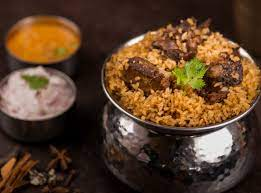
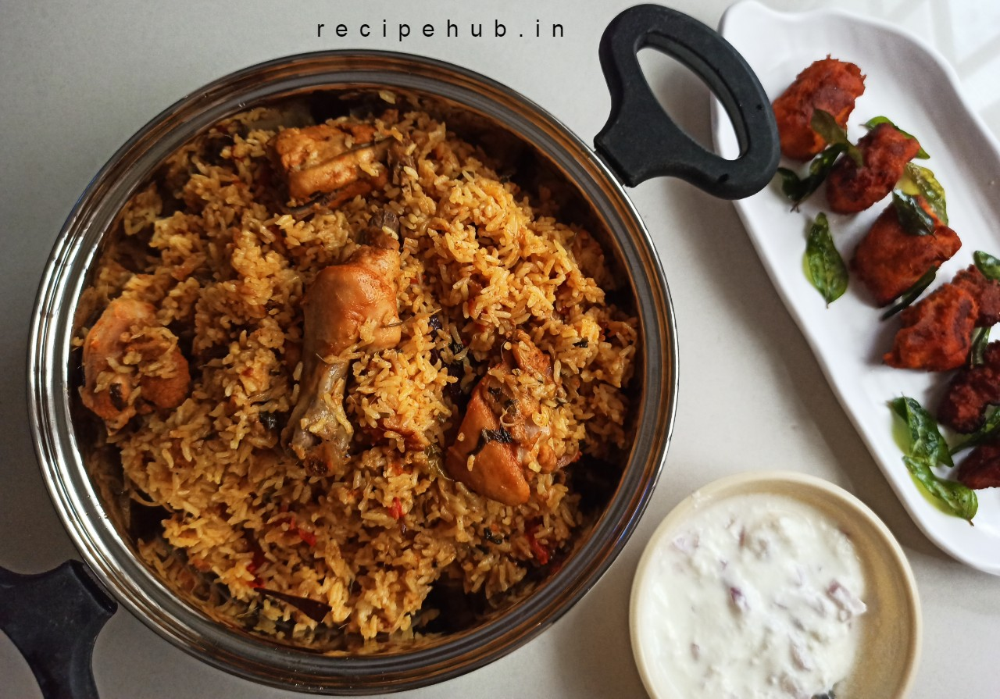

Thalappakatti Naidu is named after Ananda Vilas Biryani Hotel in Dindigul and was founded by Mr. Nagasung Naidu. The best dish to have in this restaurant is biryani.


Hyderabadi biryani, also known as Hyderabadi dum biryani, is a style of biryani from Hyderabad, India made with basmati rice and goat meat and cooked with the dum pukht method. Originating in the kitchens of the Nizam of Hyderabad, it combines elements of Hyderabadi and Mughlai cuisines.

The tiny-grained seeraga samba gets its name from its resemblance to cumin, which is known as seeragam or seera in Tamil Nadu and is the most expensive rice grown in southern India state. It is approximately a third the size of a grain of basmati rice and aroma of the rice alone can make you go mouth-watering.